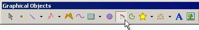
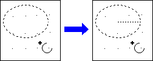
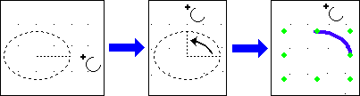
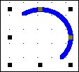
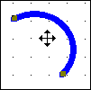
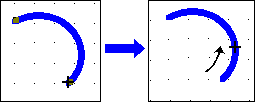
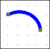

|
|
|
|
|
|
|
|
Click the Arc icon in the Graphical Objects toolbar.

An arc is part of an ellipse's circumference. Click the panel to set the start point of an ellipse's selection box.
Click the panel a second time to set the ellipse's diametric end point. A line segmenting the ellipse from the center to the circumference appears.

Pressing the CTRL key while moving the Arc tool to set the ellipse's selection box will draw a circular arc.
Draw the arc counter-clockwise. Click the panel at an angle that intersects the ellipse—once to set the arc's start point, and again to set the arc's end point. Continue clicking on the panel to place as many arcs as needed.

Pressing the CTRL key while defining the arc's start or end points will segment the arc at 45-degree angle increments.
Right-click the panel to exit the drawing mode. The last object drawn will become selected.
Modify the attributes of this arc in the Property Inspector.
The following table describes the Arc's properties.
|
Property |
Description |
|
Name |
The object's name. Whenever an object is created, a default name is generated. When renaming an object, its name must be unique within the target, must contain no more than 32 valid characters, and must follow the naming conventions. For details, see Appendix 9, Naming Conventions. |
|
Top |
The coordinates, in pixels, of the top-left corner of the object.
By changing these properties, the graphical object can be moved up, down, left, and right.
|
|
Left |
|
|
Width |
The width and height of the object's selection box can be set from 1 to 3000 pixels. |
|
Height |
|
|
Back Color |
The object's background and line colors. LineColor is the color of the object itself, and BackColor is the color of the object's background layer when the LineStyle property is set up with a pattern other than Solid or Invisible. When the LineStyle property is set to either Solid or Invisible, the color of the object's background layer will not be displayed. For more information, see Sections 7.3.1, Color Palette, 7.3.2, RGB Values, and 7.3.3, Previewing Colors for Target Machines. |
|
Line Color |
|
|
HW Back Blink |
The object's BackColor and LineColor blink speeds. The default setting is [No] for no blink, or [Fast], [Medium], or [Slow] to set the property's blink speed. These properties are displayed only when the TargetColor property is set to blink. For details about the blink feature, see Section 7.3.4, Blink Feature. |
|
HW Line Blink |
|
|
Line Style |
The object's line style. |
|
Line Width |
The width of the object's line, from 1 to 9 pixels when the LineStyle property is set to either Solid or Invisible. Must be set to a 1-pixel width when LineStyle is set to a pattern other than Solid or Invisible. |
|
Animation |
The ellipsis button For details, see Chapter 8, Animating Graphics.
|
|
Save Defaults |
The forward-arrow button |
|
Restore Defaults |
The back-arrow button |
|
Placeholder |
You can assign a placeholder in any property that requires a variable definition. Click the ellipsis to open the Placeholders dialog box and edit the variable placeholder for the object. The dialog box only displays if you had set up a placeholder for the object. For more information on placeholders, see Section 21.2.4, Working with Variable Placeholders. |
Click the arc's line to display its selection box and eight handles—one handle at the top, bottom, both sides, and at each corner.

Hover the Select tool over the arc's line to display a crossed double arrow  , then click the arc's line a second time to display its start and end points.
, then click the arc's line a second time to display its start and end points.

Hover the Select tool over the arc's start or end point to display a cross symbol +, then click and drag the point to change the arc's length.

Release the cross symbol to set the change.
